Electrodynamics II, Module 1: structured notes
Contents
Section 4.1 · Polarization
- Conductor: some electrons are free to move through the whole body.
- Insulator (dielectric): every charge is bound to an atom or molecule.
- A bound charge cannot leave, but it can shift slightly within its atom or molecule. The cumulative effect of these small shifts gives the characteristic behaviour of dielectrics.
- Two mechanisms distort the charge distribution: stretching (induced dipoles, §2) and rotating (alignment of permanent dipoles, §3).
2. Induced dipoles
2.1 Physical picture
- A neutral atom has a nucleus of charge $+q$ and an electron cloud of total charge $-q$. Net charge is zero.
- In a field $\mathbf E$, the nucleus is pushed along $\mathbf E$ and the cloud is pushed against it. The two charge centres separate by a distance $d$.
- The separated charges attract each other and pull back. The atom reaches equilibrium when the pull from the cloud equals the push from the field.
- If the field is large enough, the atom is ionised (the electrons are pulled away). Below that, equilibrium is established.
- Result: the atom is polarised and carries a dipole $\mathbf p = q\mathbf d$, pointing along $\mathbf E$.
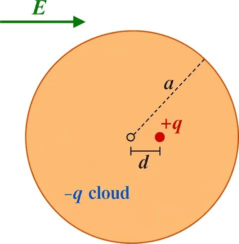
2.2 Field of a uniformly charged ball (Gauss's law)
Model the electron cloud as a uniform ball of total charge $-q$ and radius $a$. Take a point at distance $s \lt a$ from the centre.
- Charge inside radius $s$: the ball is uniform, so this fraction is $(s/a)^3$. Enclosed charge $= q\,s^3/a^3$.
- Gauss's law over a sphere of radius $s$: $\oint \mathbf E\cdot d\mathbf a = Q_{\text{enc}}/\epsilon_0$.
At $s = d$, the field grows linearly with $d$. The restoring pull is proportional to the displacement, as for a spring.
2.3 Equilibrium and polarizability (Eqs. 4.1, 4.2; Example 4.1)
- Equilibrium: applied field equals the cloud's field at the nucleus, $E = E_e$.
- Substitute $E_e$ from §2.2 with $s = d$:
$\mathbf p = \alpha\mathbf E$ (4.1), with $\alpha = 4\pi\epsilon_0 a^3 = 3\epsilon_0 v$ (4.2), where $v = \tfrac{4}{3}\pi a^3$ is the volume of the ball.
- $\alpha$ grows with the volume of the atom: larger atoms are easier to polarise.
- Accuracy: the uniform-ball model is crude. The book states it is accurate to within a factor of about 4 for many simple atoms.
2.4 Units of $\alpha$
- $p$ is in C·m and $E$ is in N/C. So $\alpha = p/E$ is in C²·m/N.
- Table 4.1 gives $\alpha/4\pi\epsilon_0$ in $10^{-30}\,\text{m}^3$. $4\pi\epsilon_0$ has units C²/(N·m²); multiplying by m³ gives C²·m/N. The two agree.
2.5 Molecules: polarizability depends on direction
- CO₂ is easier to stretch along its axis than across it: $\alpha_\parallel \approx 4.5\times10^{-40}$ and $\alpha_\perp \approx 2\times10^{-40}$ C²·m/N.
- Split $\mathbf E$ into parts parallel and perpendicular to the axis: $\mathbf p = \alpha_\parallel\mathbf E_\parallel + \alpha_\perp\mathbf E_\perp$. In general $\mathbf p$ need not point along $\mathbf E$.
- For an asymmetric molecule, each component of $\mathbf p$ depends on all components of $\mathbf E$. This needs nine constants $\alpha_{ij}$, the polarizability tensor:
- Each row of the $3\times3$ array gives one component of $\mathbf p$. The off-diagonal terms vanish in principal axes.
2.6 Problem 4.2: the electron cloud is not a uniform ball
- Hydrogen ground-state cloud: $\rho(r) = \dfrac{q}{\pi a^3}e^{-2r/a}$.
- Method: find $E_e(r)$ with Gauss's law using the shell-by-shell enclosed charge, then expand the exponential for $r \ll a$: $e^{-2r/a} \approx 1 - 2r/a$.
- The field is again linear in the displacement, so $\mathbf p \propto \mathbf E$ still holds in the weak-field limit. Only the constant changes.
3. Permanent dipoles
3.1 Physical picture
- Water is bent at about $105^\circ$. Oxygen draws electrons toward itself, so one end is negative and the other positive.
- Water therefore has a permanent dipole $\mathbf p$ even without a field. Its dipole moment is $6.1\times10^{-30}$ C·m.
- This dipole is why water dissolves salts well.
3.2 Torque (Eq. 4.4)
- Uniform field: force on $+q$ is $q\mathbf E$; force on $-q$ is $-q\mathbf E$. Net force is zero.
- The forces act at different points, so they produce a torque. Take the centre as origin; the ends are at $\pm\mathbf d/2$.
- The two contributions point the same way and add.
- The torque turns $\mathbf p$ toward $\mathbf E$. Magnitude: $pE\sin\theta$, where $\theta$ is the angle between $\mathbf p$ and $\mathbf E$.
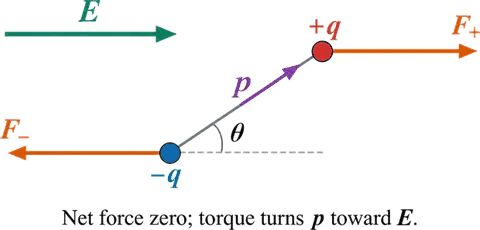
3.3 Potential energy (Eq. 4.6)
- To turn the dipole slowly from $90^\circ$ to $\theta$, an external agent must supply a torque $pE\sin\phi$ against the field.
$U = -\mathbf p\cdot\mathbf E$ (4.6), with the zero of energy at $\theta = 90^\circ$. The lowest energy is at $\theta = 0$, so a free dipole aligns with $\mathbf E$.
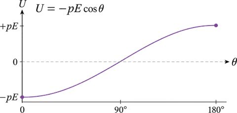
- This form applies to a permanent dipole of fixed size (book footnote 3).
- An induced dipole depends on $E$, so $-\mathbf p\cdot\mathbf E$ is not the full energy for it.
3.4 Non-uniform field: a net force (Eq. 4.5)
- Let the field at the positive end be $\mathbf E(\mathbf r + \mathbf d/2)$ and at the negative end $\mathbf E(\mathbf r - \mathbf d/2)$.
- For a short dipole, the difference is a first-order change along $\mathbf d$: $\Delta\mathbf E \approx (\mathbf d\cdot\nabla)\mathbf E$.
- Force: $\mathbf F = q\,\Delta\mathbf E$.
- $\nabla = \hat x\,\partial_x + \hat y\,\partial_y + \hat z\,\partial_z$ is the vector of partial derivatives. Partial derivatives are not part of Class 12 maths and must be learned first.
- The force is significant only if the field changes appreciably over one molecule, which is rare in dielectrics.
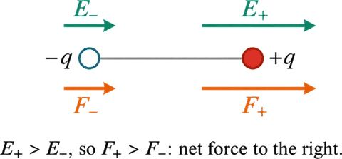
Book footnote 2 notes that $\nabla(\mathbf p\cdot\mathbf E)$ would be shorter, but $(\mathbf p\cdot\nabla)\mathbf E$ is the safe form when $\mathbf p$ varies with position.
4. Polarization $\mathbf P$
- Definition: $\mathbf P$ = dipole moment per unit volume. Unit: C/m².
- If $N$ identical dipoles $\mathbf p$ lie in unit volume and point the same way:
- Two mechanisms give a net $\mathbf P$ along $\mathbf E$: induced dipoles point along $\mathbf E$ (Eq. 4.1); permanent dipoles turn toward $\mathbf E$ (Eq. 4.4).
- The field produced by the material depends on $\mathbf P$, not on each atom separately. This is the link to §4.2 of the book.
- Some materials keep $\mathbf P$ after the field is removed (book, in passing). This is outside the first module.
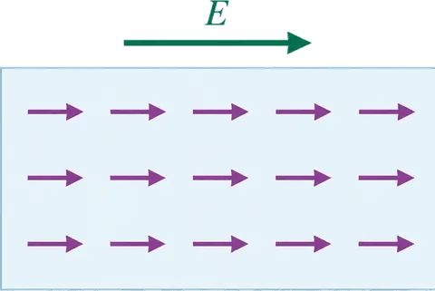
4.1 Why alignment is never complete
- Energy of a permanent dipole in a field: $-pE\cos\theta$.
- Thermal energy per molecule: of order $k_BT$, about $0.026$ eV at room temperature.
- If $pE \ll k_BT$, thermal motion dominates and the dipoles point in all directions. For ordinary fields $pE$ is small, so the net alignment is weak.
- The book notes that alignment is lost almost at once when the field is removed.
5. Open points (to verify before exam use)
- The "factor of about 4" accuracy of Eq. 4.2 is quoted from the book's statement. A possible reason is that the real cloud is concentrated nearer the nucleus than a uniform ball. This is not verified.
- Eq. 4.5 requires partial derivatives and $\nabla$. Revise these before attempting the derivation from first principles.
- Problem 4.2 is set out but the integral is not carried through in these notes.
Section 4.2 · The field of a polarized object
- Potential of a single dipole, $V = \dfrac{1}{4\pi\epsilon_0}\dfrac{\mathbf p\cdot\hat{\mathbf r}}{r^2}$ (Eq. 4.8, from §4.1).
- Polarization $\mathbf P$ = dipole moment per unit volume (§4.1.4). Field of a uniformly polarized sphere (Eq. 4.14 is derived below).
- Surface and volume charge densities, and the potential they produce (book Eqs. 3.86–3.87 for a surface charge $\cos\theta$ distribution on a sphere).
- Maths: gradient $\nabla$, divergence $\nabla\cdot$, product rule for $\nabla$, integration by parts, the divergence theorem. Partial derivatives are needed (not in Class 12 maths).
1. Potential of a polarized object (§4.2.1)
1.1 Starting point: sum over dipoles
- Each volume element $d\tau'$ at $\mathbf r'$ carries a dipole $\mathbf P(\mathbf r')\,d\tau'$.
- Summing the dipole potentials of Eq. 4.8 over the volume:
- $\boldsymbol{\mathcal R} = \mathbf r - \mathbf r'$ is the vector from the source point to the field point. This is correct in principle but not useful for calculation.
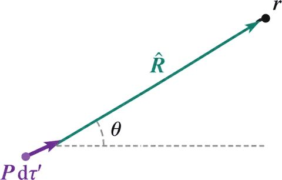
1.2 Rewrite using a gradient
- Key identity (differentiation with respect to the source coordinates $\mathbf r'$):
- Substituting:
1.3 Integrate by parts
- Product rule: $\nabla'\cdot\!\left(\dfrac{\mathbf P}{\mathcal R}\right) = \dfrac{1}{\mathcal R}\nabla'\cdot\mathbf P + \mathbf P\cdot\nabla'\!\left(\dfrac{1}{\mathcal R}\right)$. Rearranged:
- Divergence theorem on the first integral turns it into a surface integral:
1.4 Define the bound charges
Bound surface charge: $\sigma_b = \mathbf P\cdot\hat{\mathbf n}$ (4.11), where $\hat{\mathbf n}$ is the outward normal.
Bound volume charge: $\rho_b = -\nabla\cdot\mathbf P$ (4.12).
- Substituting into Eq. 4.10 gives
$V(\mathbf r) = \dfrac{1}{4\pi\epsilon_0}\oint_S\dfrac{\sigma_b}{\mathcal R}\,da' + \dfrac{1}{4\pi\epsilon_0}\displaystyle\int_V\dfrac{\rho_b}{\mathcal R}\,d\tau'$ (4.13).
- Meaning: the potential, and so the field, of a polarized object equals that of a volume charge $\rho_b$ plus a surface charge $\sigma_b$.
- Method: find $\sigma_b$ and $\rho_b$ first, then use Gauss's law or the usual potential integrals for those charges.
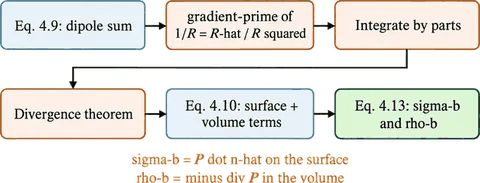
2. Worked example: uniformly polarized sphere (Example 4.2)
- Radius $R$, polarization $\mathbf P$ uniform. Choose the $z$-axis along $\mathbf P$.
- Volume charge: $\rho_b = -\nabla\cdot\mathbf P = 0$, since $\mathbf P$ is uniform.
- Surface charge: $\sigma_b = \mathbf P\cdot\hat{\mathbf n} = P\cos\theta$.
- So the problem is the field of a $P\cos\theta$ surface charge on a sphere. The book uses the known potential of that distribution (Eqs. 3.86–3.87):
- Inside: $r\cos\theta = z$, so the potential is linear in $z$ and the field is uniform:
$\mathbf E = -\nabla V = -\dfrac{P}{3\epsilon_0}\hat{\mathbf z} = -\dfrac{1}{3\epsilon_0}\mathbf P$ for $r \lt R$ (4.14).
- Outside: the potential equals that of a perfect dipole at the origin, with moment equal to the total dipole moment of the sphere:
$V = \dfrac{1}{4\pi\epsilon_0}\dfrac{\mathbf p\cdot\hat{\mathbf r}}{r^2}$ for $r \ge R$ (4.15), with $\mathbf p = \dfrac{4}{3}\pi R^3\,\mathbf P$ (4.16).
- Check: $\dfrac{p}{4\pi\epsilon_0} = \dfrac{(4/3)\pi R^3 P}{4\pi\epsilon_0} = \dfrac{R^3 P}{3\epsilon_0}$, which matches the outside potential above.
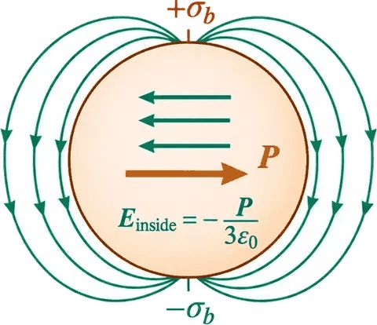
3. Physical meaning of bound charges (§4.2.2)
3.1 Dipole chain
- Take a line of dipoles. Inside the line, the head of one dipole cancels the tail of its neighbour.
- At the two ends, one charge is left over: positive at the right end, negative at the left.
- Such leftover charge is called bound charge. It cannot be removed, because each electron stays attached to its own atom or molecule. Otherwise it behaves like any other charge.
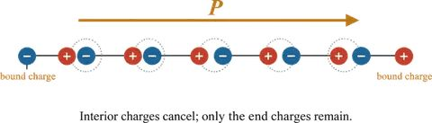
3.2 Amount of bound charge at a flat end
- Consider a tube of dielectric parallel to $\mathbf P$, cross-section $A$. Each chunk of length $d$ has dipole moment $P(Ad)$. Written as $qd$, the charge at the end of the tube is
- For a flat cut perpendicular to $\mathbf P$: $\sigma_b = q/A = P$.
- For an oblique cut at angle $\theta$ to the perpendicular, the end area is $A_\text{end} = A/\cos\theta$. The charge is unchanged, so
$\sigma_b = \dfrac{q}{A_\text{end}} = P\cos\theta = \mathbf P\cdot\hat{\mathbf n}$.
- This agrees with the rigorous result of §4.2.1 (Eq. 4.11), and now we know where the charge comes from.
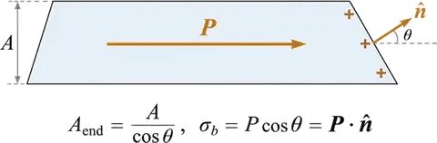
3.3 Bound volume charge from non-uniform P
- If $\mathbf P$ varies in space, charge also piles up inside the material.
- Where $\mathbf P$ diverges (spreads out), there is a net negative pile-up, because the flux of $\mathbf P$ leaving a volume leaves a deficit of positive charge behind.
- Total bound charge in a volume must equal minus the flux of $\mathbf P$ out of it:
- Since this holds for any volume: $\rho_b = -\nabla\cdot\mathbf P$ (4.12), confirming §4.2.1.
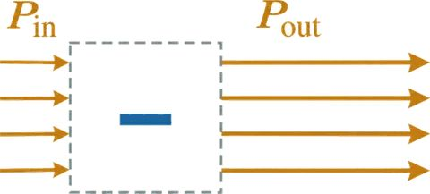
3.4 Example 4.3: two overlapping spheres
- A uniformly polarized sphere can be seen as a positive sphere and a negative sphere of equal size, displaced by $\mathbf d$. Before polarization they cancel exactly.
- Polarization moves the positive charges up and the negative charges down. Two caps of uncancelled charge remain: positive at the top, negative at the bottom. These are the bound surface charges $\sigma_b$.
- Inside the overlap, the field of the two uniform spheres is (from Prob. 2.19):
- With $\mathbf p = q\mathbf d = \tfrac{4}{3}\pi R^3\mathbf P$, this is $\mathbf E = -\dfrac{1}{3\epsilon_0}\mathbf P$, which matches Eq. 4.14.
- Outside: each sphere acts as a point charge at its centre, so the total is a dipole with potential $\dfrac{1}{4\pi\epsilon_0}\dfrac{\mathbf p\cdot\hat{\mathbf r}}{r^2}$. This matches Eq. 4.15.
- Note: $\mathbf d$ is a small fraction of an atomic radius. The book's figure exaggerates it.
4. Macroscopic and microscopic fields (§4.2.3)
Background. Book footnote 5 says this subsection can be skipped without loss of continuity. It is not in the syllabus list for Module I.
4.1 Why the method is questioned
- Section 1 used perfect (point) dipoles and replaced a set of discrete molecular dipoles by a continuous density $\mathbf P$.
- Outside the dielectric, the molecules are far away, so the dipole approximation holds and the method is safe.
- Inside, the actual field is very complicated on the atomic scale. It is huge near an electron and small or reversed a short distance away, and it changes with time.
4.2 Macroscopic field
- Definition: the average of the true microscopic field over a region that is large enough to contain very many atoms, and small enough not to smooth out large-scale variations. In practice, the averaging region is much smaller than the object.
- Ordinarily, "the field inside matter" means this macroscopic field. It is also the basis of the idea of density of a material.
4.3 Split the field at a point
- Draw a small sphere about the point $\mathbf r$. The macroscopic field splits into two parts:
- $\mathbf E_\text{out}$: the average field over the sphere due to charges outside it. The average over a sphere due to outside charges equals the field at the centre (Prob. 3.51d). Far enough away, Eq. 4.9 applies:
- $\mathbf E_\text{in}$: the average field due to charges inside the sphere. By Eq. 3.105 it depends only on the total dipole moment:
4.4 Why this gives the same answer as §4.2.1
- $\mathbf P$ does not vary much over the small sphere. So the part of the integral over the small sphere equals the field at the centre of a uniformly polarized sphere, which is $-\dfrac{1}{3\epsilon_0}\mathbf P$ (Eq. 4.14).
- Eq. 4.18 supplies exactly this term, so it is put back in.
- Result: the macroscopic potential is the integral over the whole dielectric:
$V(\mathbf r) = \dfrac{1}{4\pi\epsilon_0}\displaystyle\int\dfrac{\mathbf P(\mathbf r')\cdot\hat{\boldsymbol{\mathcal R}}}{\mathcal R^2}\,d\tau'$ (4.19).
- This is the same integral as Eq. 4.9. The method of §4.2.1 therefore gives the macroscopic field inside the dielectric.
- The conclusion does not depend on the shape of the averaging region, though the book uses a sphere. A cube or ellipsoid would give the same final answer, with more difficult algebra.
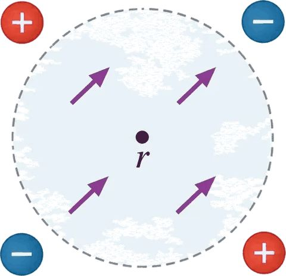
5. What you must be able to do
- Derive Eq. 4.10 from Eq. 4.9, using the gradient identity, the product rule and the divergence theorem.
- State $\sigma_b$ and $\rho_b$ and the potential Eq. 4.13.
- Find the field inside and outside a uniformly polarized sphere (Eqs. 4.14–4.16).
- Explain why an oblique cut carries $\sigma_b = \mathbf P\cdot\hat{\mathbf n}$ (§3.2).
- Explain why a diverging $\mathbf P$ produces negative bound charge (§3.3).
- Check that the total bound charge of a neutral dielectric is zero (Prob. 4.14).
6. Problems in the excerpt (not solved here)
- Prob. 4.10: $\mathbf P = k\mathbf r$ in a sphere; find $\sigma_b$, $\rho_b$, and the fields.
- Prob. 4.11: bar electret (frozen-in uniform P in a short cylinder); sketch the field for three cases.
- Prob. 4.12: compute the potential of the uniformly polarized sphere directly from Eq. 4.9.
- Prob. 4.13: field inside and outside a long cylinder with P perpendicular to its axis.
- Prob. 4.14: prove from Eqs. 4.11 and 4.12 that the total bound charge vanishes.
7. Open points
- The sign and form of the outside field of the sphere (Eq. 4.15) were checked by the potential only. The field outside has not been computed separately here.
- Eq. 3.105 (average field of the dipoles inside a sphere) and Prob. 3.51d are cited from the book. Their proofs are not reproduced in these notes.
- Problems 4.10–4.13 are listed, not solved.
Section 4.3 · The electric displacement
- Gauss's law in differential form: $\nabla\cdot\mathbf E = \rho/\epsilon_0$ (Section 2).
- Bound charges from §4.2: $\rho_b = -\nabla\cdot\mathbf P$ and $\sigma_b = \mathbf P\cdot\hat{\mathbf n}$ (Eqs. 4.11, 4.12).
- Electrostatic fields have zero curl, $\nabla\times\mathbf E = 0$ (Section 2).
- Maths: divergence, curl, the divergence theorem, Stokes' theorem.
1. Free and bound charge
- Free charge $\rho_f$: electrons on a conductor, ions in the material, or any charge not associated with $\mathbf P$.
- Bound charge $\rho_b$: the charge produced by polarization (§4.2).
- Total charge density inside a dielectric:
2. Derivation of the electric displacement (§4.3.1)
2.1 Gauss's law with both kinds of charge
- Here $\mathbf E$ is the total field, not only the part due to polarization.
2.2 Combine the divergences
$\mathbf D \equiv \epsilon_0\mathbf E + \mathbf P \quad(4.21)$, the electric displacement.
$\nabla\cdot\mathbf D = \rho_f \quad(4.22)$, and in integral form $\oint\mathbf D\cdot d\mathbf a = Q_{f,\text{enc}} \quad(4.23)$.
2.3 Why this form is useful
- Equation 4.23 uses only the free charge, which is the quantity we control.
- Bound charge follows automatically once the free charge is in place, through the polarization it causes.
- In a typical problem $\rho_f$ is known and $\rho_b$ is not. Eq. 4.23 lets us start from what is known.
- Whenever the symmetry allows (spherical, cylindrical or plane), $\mathbf D$ follows directly from the usual Gauss's law method.
2.4 Surface bound charge
- Gauss's law in differential form cannot be applied exactly at the surface, because $\rho_b$ is infinite there (the polarization drops abruptly to zero). This is the surface term $\sigma_b$ (footnote 7).
- If the edge is given a thin transition zone where $\mathbf P$ tapers to zero, $\rho_b$ is large but finite, and Gauss's law holds everywhere. The integral form (4.23) avoids the issue altogether.
3. Worked example: wire with rubber insulation (Example 4.4)
- Uniform line charge $\lambda$ on a long wire, surrounded by insulation out to radius $a$.
- Gaussian cylinder of radius $s$ and length $L$. By symmetry $\mathbf D$ is radial and constant on the surface. The free charge inside is $\lambda L$.
$\mathbf D = \dfrac{\lambda}{2\pi s}\,\hat{\mathbf s}$ (4.24), valid both inside and outside the insulation.
- Outside ($s > a$): $\mathbf P = 0$, so $\mathbf E = \mathbf D/\epsilon_0 = \dfrac{\lambda}{2\pi\epsilon_0 s}\hat{\mathbf s}$.
- Inside: $\mathbf E$ cannot be found from $\mathbf D$ alone, because $\mathbf P$ is not yet known. This needs the material's response, given in §4.4.
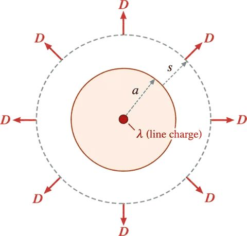
4. Method: finding D and then E
- List the free charges only.
- Check the symmetry. If it is spherical, cylindrical or planar, continue; otherwise do not assume $\mathbf D$ is set by free charge alone (§5).
- Choose a Gaussian surface matching the symmetry and apply Eq. 4.23.
- Find $\mathbf E$ from $\mathbf E = (\mathbf D - \mathbf P)/\epsilon_0$ (Eq. 4.21) once $\mathbf P$ is known.
5. Pitfalls (§4.3.2: beyond syllabus)
- Eq. 4.22 looks like Gauss's law with $\rho_f$ in place of $\rho$, so it is tempting to say "$\mathbf D$ is just $\mathbf E$ with free charge as the source". This is false: there is no Coulomb's law for $\mathbf D$.
- A divergence alone does not fix a vector field; the curl is needed too.
- The curl of $\mathbf D$ is not zero in general:
- So $\mathbf D$ cannot be written as the gradient of a scalar: there is no potential for $\mathbf D$.
- Example: a bar electret with no free charge. If $\mathbf D$ were set by free charge alone, $\mathbf D = 0$ everywhere and $\mathbf E = -\mathbf P/\epsilon_0$ inside. That is wrong, so the curl term must be kept.
- Advice from the book: use symmetry first. With symmetry, $\nabla\times\mathbf P$ is automatically zero, so Gauss's law gives $\mathbf D$ directly.
6. Boundary conditions (§4.3.3: in syllabus)
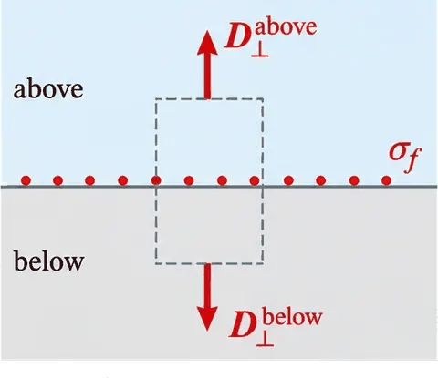
6.1 Normal component of D
- Pillbox across the interface, with area $A$, height tending to zero. Only the two flat faces contribute to $\oint\mathbf D\cdot d\mathbf a$.
- Free charge on the interface $\sigma_f A$ is enclosed, so
$D^\perp_\text{above} - D^\perp_\text{below} = \sigma_f \quad(4.26)$
6.2 Tangential component of D
- Take a thin rectangular loop across the interface and apply Stokes' theorem to Eq. 4.25. The field $\nabla\times\mathbf P$ is integrated over the loop's area, which shrinks to zero, but $\mathbf P$ itself is finite. The loop integral of $\mathbf P$ gives the tangential difference times the loop length.
$\mathbf D^\parallel_\text{above} - \mathbf D^\parallel_\text{below} = \mathbf P^\parallel_\text{above} - \mathbf P^\parallel_\text{below} \quad(4.27)$
6.3 Boundary conditions on E
- Written in terms of total charge, the normal and tangential conditions on $\mathbf E$ are (Eqs. 2.31, 2.32):
- Use (4.26)–(4.27) when $\mathbf P$ is known and free charge is the given data. Use (4.28)–(4.29) for the field directly. Probs. 4.16 and 4.17 are suggested.
7. Ionic crystals: the ambiguity (§4.3.4: background)
- In a salt crystal, Na⁺ and Cl⁻ can be paired into dipoles in several ways. Each choice gives a different $\mathbf P$ (up, down, left, right), and a different split of charge into free and bound parts.
- So the separation into $\mathbf P$, free charge and bound charge is not uniquely defined for crystals.
- What is physical is the total charge density, which is zero in the salt crystal, and changes in $\mathbf P$ when a field is switched on.
8. What you should be able to do
- Derive Eq. 4.22 from Gauss's law with $\rho = \rho_b + \rho_f$.
- Find $\mathbf D$ for a symmetric free charge distribution using Eq. 4.23 (Example 4.4).
- State and derive Eqs. 4.26 and 4.27 with a pillbox and a thin loop.
- Explain why $\mathbf D$ cannot be found from free charge alone when $\nabla\times\mathbf P \neq 0$.
9. Problems in the excerpt (not solved here)
- Prob. 4.15: thick spherical shell with $\mathbf P = (k/r)\hat{\mathbf r}$. Find E in three regions by two methods.
- Prob. 4.16: field at the centre of spherical, needle and wafer cavities in a polarized dielectric.
- Prob. 4.17: sketches of P, E and D for the bar electret (Prob. 4.11), with $L \approx 2a$.
10. Open points
- Sign convention of the normal in Eqs. 4.26 and 4.28 to be checked against Section 2.3.5.
- Footnote 7 (delta-function derivative) is stated, not derived here.
- The book figures 4.17–4.22 are not reproduced; the diagrams here are our own.
- Section 4.4 (linear dielectrics, $\mathbf P = \epsilon_0\chi_e\mathbf E$) is the next section, not included here.
Section 4.4 · Linear dielectrics
Book pp. 186–194 and 202–208. Book pp. 195–201 are not in the excerpt, so the start of §4.4.3 (force on a dielectric) is missing. Syllabus: §4.4.1 (in Module I, item 3). §4.4.2 and the Clausius–Mossotti and Langevin parts are background.
Before you start
- $\mathbf D = \epsilon_0\mathbf E + \mathbf P$ and $\nabla\cdot\mathbf D = \rho_f$ (§4.3).
- Boundary conditions for $\mathbf D$ and $\mathbf E$ (§4.3.3).
- Maths: Laplace's equation, Legendre expansion (Ch. 3), Boltzmann factor and averages (statistical mechanics, background).
1. Susceptibility, permittivity, dielectric constant (§4.4.1)
1.1 Linear dielectric
- $\chi_e$ is the electric susceptibility. The factor $\epsilon_0$ is extracted so that $\chi_e$ is dimensionless. It depends on the substance and on conditions such as temperature.
- E is the total field, which includes the field of the polarization itself. So $\mathbf P$ cannot be found directly from the external field; the problem is an infinite regress, usually broken by starting from $\mathbf D$.
- Footnote 10: a non-linear medium has a cubic term; Eq. 4.30 is the first term of a Taylor series of $\mathbf P$ in $\mathbf E$.
1.2 Permittivity and dielectric constant
$\mathbf D = \epsilon_0\mathbf E + \epsilon_0\chi_e\mathbf E = \epsilon_0(1+\chi_e)\mathbf E \quad(4.31)$
So $\mathbf D = \epsilon\mathbf E \quad(4.32)$ with $\epsilon \equiv \epsilon_0(1+\chi_e) \quad(4.33)$.
Relative permittivity (dielectric constant): $\epsilon_r \equiv 1+\chi_e = \epsilon/\epsilon_0 \quad(4.34)$.
- In vacuum $\chi_e = 0$, so $\epsilon = \epsilon_0$. The book dislikes calling $\epsilon_0$ the "permittivity of free space", because it suggests vacuum is a special linear dielectric.
- For ordinary materials $\epsilon_r > 1$, because $\mathbf P$ usually points along $\mathbf E$.
- Eq. 4.32 is a constitutive relation (footnote 11). The physics of linear dielectrics is entirely in Eq. 4.30.
Table 4.2 (book): dielectric constants.
| Material | ε_r | Material | ε_r |
|---|---|---|---|
| Vacuum | 1 | Benzene | 2.28 |
| Helium | 1.000065 | Diamond | 5.7–5.9 |
| Neon | 1.00013 | Sodium chloride | 5.9 |
| Hydrogen (H₂) | 1.000254 | Silicon | 11.7 |
| Argon | 1.000517 | Methanol | 33.0 |
| Air (dry) | 1.000536 | Water | 80.1 |
| Nitrogen (N₂) | 1.000548 | Ice (−30 °C) | 104 |
| Water vapor (100 °C) | 1.00589 | KTaNbO₃ (0 °C) | 34,000 |
2. Example 4.5: metal sphere in a dielectric shell
- Metal sphere radius $a$, charge $Q$; linear dielectric $\epsilon$ out to radius $b$; vacuum beyond. Find the potential at the centre.
- Bind: $\mathbf E$ needs $\mathbf P$, and $\mathbf P$ needs $\mathbf E$. Break it by using the free charge.
- Free charge $Q$, spherical symmetry, Gauss with $\mathbf D$:
- Inside the metal, $\mathbf E = \mathbf P = \mathbf D = 0$.
- From $\mathbf D = \epsilon\mathbf E$:
$\mathbf E = \dfrac{Q}{4\pi\epsilon r^2}\hat{\mathbf r}$ for $a \lt r \lt b$; $\mathbf E = \dfrac{Q}{4\pi\epsilon_0 r^2}\hat{\mathbf r}$ for $r>b$.
- Potential at the centre:
- Bound charge (not needed for $V$, but it explains the field): $\mathbf P = \dfrac{\epsilon_0\chi_e Q}{4\pi\epsilon r^2}\hat{\mathbf r}$; $\rho_b = 0$ in the dielectric; $\sigma_b = \dfrac{\epsilon_0\chi_e Q}{4\pi\epsilon b^2}$ at $b$ and $\sigma_b = -\dfrac{\epsilon_0\chi_e Q}{4\pi\epsilon a^2}$ at $a$.
- The negative layer at $a$ reduces the field from $1/4\pi\epsilon_0$ to $1/4\pi\epsilon$. A dielectric is like an imperfect conductor: a conducting shell would cancel the field completely, the dielectric only partly.
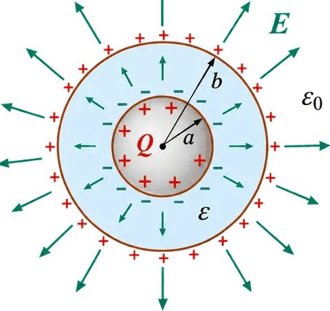
3. Homogeneous linear dielectric: the field is reduced
- Caveat: $\nabla\times\mathbf P$ need not vanish across an interface between different materials, because $\epsilon_0\chi_e$ differs on the two sides (footnote 12: $\nabla\times\mathbf P = -\epsilon_0\mathbf E\times(\nabla\chi_e)$).
- If all space is filled with one homogeneous linear dielectric, $\nabla\times\mathbf D = 0$ and $\nabla\cdot\mathbf D = \rho_f$. So $\mathbf D = \epsilon_0\mathbf E_{\text{vac}}$, where $\mathbf E_{\text{vac}}$ is the field the same free charge would give in vacuum.
$\mathbf E = \dfrac{1}{\epsilon_r}\mathbf E_{\text{vac}} \quad(4.35)$. For a point charge $q$ embedded in a large dielectric: $\mathbf E = \dfrac{1}{4\pi\epsilon}\dfrac{q}{r^2}\hat{\mathbf r} \quad(4.36)$.
- Coulomb's law is not wrong. The polarization shields the charge with bound charge of opposite sign (Fig. 4.25 in the book).
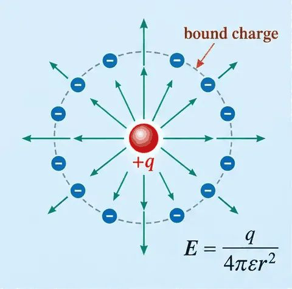
4. Example 4.6: capacitor filled with dielectric
- Parallel plates, field confined between them. The dielectric reduces $E$, and so $V$, by $1/\epsilon_r$ at fixed $Q$.
$C = \epsilon_r C_{\text{vac}} \quad(4.37)$. This is a common way to increase a capacitor's capacitance.
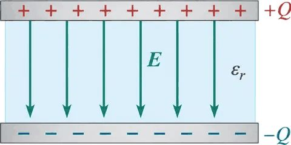
5. Anisotropic crystals (§4.4.1, continued)
- A crystal can be easier to polarize in some directions. Then Eq. 4.30 becomes a tensor relation (4.38), with nine susceptibilities $\chi_{e_{ij}}$ (the susceptibility tensor).
- Footnote 15: an isotropic medium has the same properties in all directions. Unless stated otherwise, "linear dielectric" means isotropic linear dielectric. "Linear" alone means each component of $\mathbf P$ is proportional to $\mathbf E$ at each point, with a factor that may depend on position and direction.
6. Boundary value problems with linear dielectrics (§4.4.2: background)
6.1 Bound charge in a homogeneous linear dielectric
- Without embedded free charge, $\rho = 0$ inside, and any net charge sits on the surface. The potential satisfies Laplace's equation.
- Footnote 16: this does not apply to $\sigma_b$, because $\chi_e$ changes at the boundary.
6.2 Boundary conditions in terms of free charge
6.3 Example 4.7: dielectric sphere in a uniform field
- Sphere radius $R$, dielectric $\epsilon_r$, in uniform $\mathbf E_0$. Compare with a conducting sphere (Ex. 3.8), where the field inside is cancelled completely. In the dielectric the cancellation is partial.
- Boundary conditions (4.43): (i) $V_{\text{in}} = V_{\text{out}}$ at $r = R$; (ii) $\epsilon\,\partial V_{\text{in}}/\partial r = \epsilon_0\,\partial V_{\text{out}}/\partial r$ at $r = R$ (from 4.41, no free surface charge); (iii) $V_{\text{out}} \to -E_0 r\cos\theta$ for $r \gg R$.
- Expansions: $V_{\text{in}} = \sum A_l r^l P_l(\cos\theta)$ (4.44); $V_{\text{out}} = -E_0 r\cos\theta + \sum B_l r^{-(l+1)} P_l(\cos\theta)$ (4.45).
- Matching (i) gives (4.46); matching (ii) gives (4.47). Each $l$ must match separately (orthogonality of Legendre polynomials, footnote 17).
$A_l = B_l = 0$ for $l \ne 1$; $A_1 = -\dfrac{3}{\epsilon_r+2}E_0$; $B_1 = \dfrac{\epsilon_r-1}{\epsilon_r+2}R^3E_0 \quad(4.48)$.
Inside: $V_{\text{in}} = -\dfrac{3E_0}{\epsilon_r+2}z$, so the field is uniform: $\mathbf E = \dfrac{3}{\epsilon_r+2}\mathbf E_0 \quad(4.49)$.
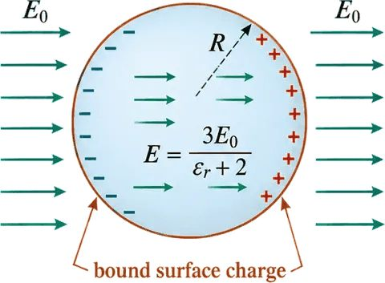
7. Forces on dielectrics (§4.4.3: partial in excerpt)
Pages 195–201 are missing from the excerpt. What follows is the part on pp. 202–203.
7.1 Energy method
- A dielectric slab is pulled into a capacitor. Fringing fields are hard to calculate, so use energy.
- Work done in moving the slab by $dx$: $dW = F_{\text{me}}\,dx$, with $F_{\text{me}} = -F$. So $F = -\dfrac{dW}{dx} \quad(4.59\text{–}4.60)$.
- Energy at constant charge: $W = \tfrac12 Q^2/C \quad(4.63)$; with capacitance $C = \dfrac{\epsilon_0 w}{d}(\epsilon_r l - \chi_e x) \quad(4.62)$.
$F = -\dfrac{dW}{dx} = \tfrac12 V^2\dfrac{dC}{dx} \quad(4.64)$, and with $dC/dx = -\epsilon_0\chi_e w/d$: $F = -\dfrac{\epsilon_0\chi_e w}{2d}V^2 \quad(4.65)$.
- The minus sign: the slab is pulled into the capacitor.
- Common mistake: using $W = \tfrac12 CV^2$ (constant $V$) with $F = -dW/dx$ gives the wrong sign. With a battery, the work $V\,dQ$ must be included (Eq. 4.66), and the result (4.67) is the same as (4.64).
- The force depends only on the charge distribution at that moment, not on whether $Q$ or $V$ is held fixed.
- The force was found without the fringing fields. This is allowed because electrostatics ($\nabla\times\mathbf E = 0$) fixes them.
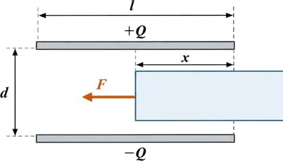
8. Clausius–Mossotti and Langevin (§4.4.3: background)
8.1 Clausius–Mossotti
- Naive guess: $\mathbf P = N\mathbf p = N\alpha\mathbf E$, so $\chi_e = N\alpha/\epsilon_0$ (4.70).
- Correction: $\alpha$ (Eq. 4.1) is defined with $\mathbf E_{\text{else}}$, the field due to everything except the atom. The macroscopic $\mathbf E$ is different. Averaging over a sphere of radius $R$ around each atom gives $\mathbf E = (1 - N\alpha/3\epsilon_0)\mathbf E_{\text{else}}$ (4.71).
$\chi_e = \dfrac{N\alpha/\epsilon_0}{1 - N\alpha/3\epsilon_0}$, equivalently $\alpha = \dfrac{3\epsilon_0}{N}\dfrac{\epsilon_r - 1}{\epsilon_r + 2} \quad(4.72)$ (Clausius–Mossotti; Lorentz–Lorenz in optics).
8.2 Langevin formula for polar molecules
- Energy of a dipole: $u = -pE\cos\theta$ (4.6). Boltzmann weight $e^{-u/kT}$.
- Average over orientations gives
- High field or low temperature: nearly all dipoles align, and the response is non-linear. Usual case $pE \ll kT$: the medium is linear, with $\chi_e \approx Np^2/(3\epsilon_0 kT)$ (derived from the small-argument expansion of (4.73); the book asks for this in Prob. 4.44b).
- Check against water: the book notes the measured value differs strongly, because $\mathbf E$ and $\mathbf E_{\text{else}}$ are again confused. The agreement is better for low-density gases.
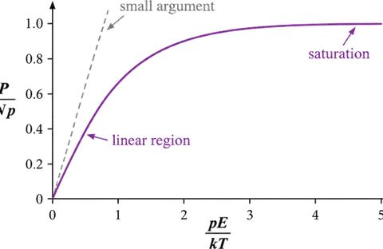
9. What you should be able to do
- Derive $\mathbf D = \epsilon\mathbf E$ and $\epsilon_r = 1 + \chi_e$ (4.31–4.34).
- Solve Example 4.5 by finding $\mathbf D$ first.
- Show $\mathbf E = \mathbf E_{\text{vac}}/\epsilon_r$ and $C = \epsilon_r C_{\text{vac}}$ for a filled homogeneous region.
- Apply the sphere boundary conditions to get Eq. 4.49.
- Find the force on a slab with the energy method, with the sign checked (4.64–4.67).
- Explain why $\chi_e$ must use $\mathbf E_{\text{else}}$ at high density (4.71–4.72).
10. Problems in the excerpt (not solved here)
- Prob. 4.18: two slabs ($\epsilon_r = 2$ and $1.5$) between plates; find $\mathbf D$, $\mathbf E$, $\mathbf P$, $V$ and all bound charge.
- Prob. 4.19: half-filled capacitor, two arrangements.
- Prob. 4.20: sphere with uniform free charge and dielectric; potential at centre.
- Prob. 4.21: coaxial cable partly filled with dielectric; capacitance per length.
- Prob. 4.28: dielectric oil rising between tubes (uses Eq. 4.64).
- Prob. 4.36–4.38: point charge and dipole in a dielectric sphere; refraction of field lines $\tan\theta_2/\tan\theta_1 = \epsilon_2/\epsilon_1$ (4.68).
- Prob. 4.42–4.44: Clausius–Mossotti and Langevin checks.
11. Open points
- Pages 195–201 are missing, so the start of §4.4.3 is not covered.
- The approximate Langevin result in §8.2 is derived here only as a statement; the expansion of (4.73) is not written out.
- Footnote 12's form for $\nabla\times\mathbf P$ is stated, not derived.
Section 6.1 · Magnetization
Book pp. 268–276 (Ch. 6 opener at p. 268). Pages 209–267 are not in the excerpt. Syllabus: §6.1.1–6.1.4 (Module I, item 4).
Before you start
- Magnetic field of a current; force on a current in a field, $\mathbf F = I\int d\mathbf l\times\mathbf B$ (Ch. 5).
- Electric dipole torque and energy: $\mathbf N = \mathbf p\times\mathbf E$, $\mathbf F = \nabla(\mathbf p\cdot\mathbf E)$ (§4.1).
- Lorentz force and central force for circular orbits.
1. Mechanisms of magnetization (§6.1.1)
- All magnetism in classical electrodynamics comes from moving charges. In atoms, these are orbital motion and spin, which act as tiny current loops.
- At the macroscopic scale each loop is a magnetic dipole. Random orientation cancels them. A field gives a net alignment: the medium is magnetized.
- Three behaviours:
- Paramagnet: magnetization parallel to B.
- Diamagnet: magnetization opposite to B.
- Ferromagnet: magnetization can remain after B is removed; it depends on the history of the sample. Saved for the end of the chapter (§6.4.2).
- Footnote 1 (quantum): spin is a fixed point dipole and cannot be modelled as a spinning sphere. The classical picture is incomplete, and the book says so.
2. Torque and force on a magnetic dipole (§6.1.2)
2.1 Torque on a rectangular loop
- Loop of sides $a$ and $b$, current $I$, tilted by $\theta$ in uniform $\mathbf B$ along $z$.
- Forces on the sloping sides cancel and do not rotate the loop. Forces on the two horizontal sides are equal and opposite. Net force is zero, but they give a torque.
- Magnitude per side $F = IbB$; lever arm $a\sin\theta$:
$\mathbf N = IabB\sin\theta\,\hat{\mathbf x} = \mathbf m\times\mathbf B \quad(6.1)$, where $m = Iab$ is the dipole moment.
- Eq. 6.1 is the same form as $\mathbf N = \mathbf p\times\mathbf E$ (Eq. 4.4). It turns the dipole to align with B.
- Any loop can be built from small rectangles, so the result holds generally. Prob. 6.2 asks for the general proof.
2.2 Why paramagnetism is limited
- Electrons pair with opposite spins (Pauli). Paired spins cancel, so paramagnetism mostly occurs in atoms or molecules with an odd number of electrons (footnote 2: not always for outer shells).
- Thermal collisions upset the alignment, so it is never complete.
2.3 Force on a loop
- Uniform field: $\mathbf F = I\oint d\mathbf l\times\mathbf B = 0$, because $\oint d\mathbf l = 0$ for a closed loop.
- Non-uniform field (ring above a short solenoid, radial component present): net force $F = 2\pi IRB\cos\theta \quad(6.2)$.
- Infinitesimal dipole in a non-uniform field:
$\mathbf F = \nabla(\mathbf m\cdot\mathbf B) \quad(6.3)$. This is the magnetic analogue of $\nabla(\mathbf p\cdot\mathbf E)$. Footnote 3: write it as $\mathbf m\times(\nabla\times\mathbf B) + (\mathbf m\cdot\nabla)\mathbf B$ to avoid differentiating $\mathbf m$.
2.4 Two models of a magnetic dipole
- Gilbert model: two magnetic monopoles separated by $d$. Mathematically convenient; copy electrostatic results with $\mathbf p \to \mathbf m$, $1/\epsilon_0 \to \mu_0$, $\mathbf E \to \mathbf B$.
- Ampère model: a current loop. The physically correct one. No magnetic monopoles exist: breaking a magnet gives two magnets.
- The book's advice: use Gilbert for intuition, never for quantitative close-up answers.
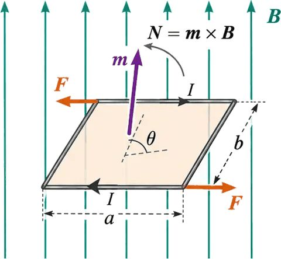
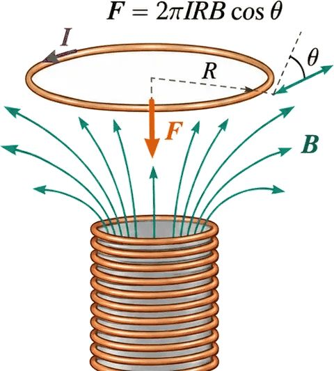
3. Orbital motion and diamagnetism (§6.1.3)
3.1 Orbital dipole moment
- Electron on a circular orbit of radius $R$ with speed $v$: period $T = 2\pi R/v$, current $I = -e/T = -ev/2\pi R$.
- Dipole moment $I\pi R^2$:
- The orbital torque is small, because it is hard to tilt the whole orbit (compare the spin).
3.2 Speed change in a field
- Without B, the central force is electric: $\dfrac{1}{4\pi\epsilon_0}\dfrac{e^2}{R^2} = m_e\dfrac{v^2}{R} \quad(6.5)$.
- With B perpendicular to the orbit, the extra force is $-e(\mathbf v\times\mathbf B)$, which points toward the centre for one sense of rotation. Then (6.6): $\dfrac{1}{4\pi\epsilon_0}\dfrac{e^2}{R^2} + e\bar vB = m_e\dfrac{\bar v^2}{R}$.
- Subtract (6.5) from (6.6): $e\bar vB = \dfrac{m_e}{R}(\bar v + v)(\bar v - v)$. For small change $\Delta v$:
$\Delta v = \dfrac{eRB}{2m_e} \quad(6.7)$. The electron speeds up when B is switched on.
- Footnote 5: magnetic forces do no work (Eq. 5.11). The speed change is produced by the induced electric field of a changing B (Ch. 7).
3.3 Change in the dipole moment
- From (6.4): $\Delta\mathbf m = -\tfrac12 e(\Delta v)R\,\hat{\mathbf z}$.
$\Delta\mathbf m = -\dfrac{e^2R^2}{4m_e}\mathbf B \quad(6.8)$. The change is opposite to B, whichever way the electron circles.
- Each atom gets a small extra dipole antiparallel to B. This is diamagnetism. It is universal, but weaker than paramagnetism, so it shows mainly in atoms with an even number of electrons.
- Caveats (book's own): assuming the orbit stays circular is justified only for an atom placed in a field while stationary (Prob. 7.55). The classical model is flawed; diamagnetism is really quantum. Qualitatively the result holds, even if the radius rather than the speed changes (the factor changes by 2).
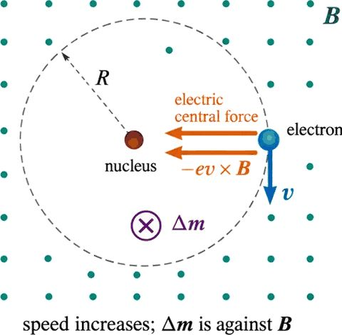
4. Magnetization M (§6.1.4)
$\mathbf M \equiv$ magnetic dipole moment per unit volume (6.9). It is the magnetic analogue of $\mathbf P$.
- Two mechanisms feed M: paramagnetic torque alignment (spin) and diamagnetic speed change (orbit). The source does not matter for the field calculation: M is taken as given (§6.2).
- Forces on samples: in a non-uniform field, paramagnets are drawn into the field and diamagnets pushed out. The forces are tiny: a comparable iron sample feels $10^4$–$10^5$ times more. This is why the field of copper wire in Ch. 5 could ignore magnetization.
- Footnote 7: a live frog was levitated by a strong field, because water is weakly diamagnetic.
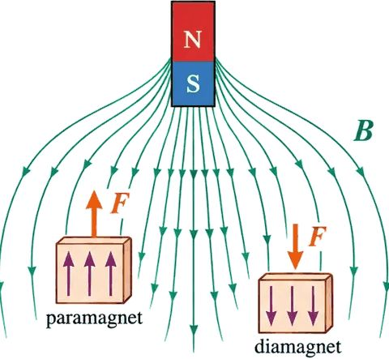
5. What you should be able to do
- Derive $\mathbf N = \mathbf m\times\mathbf B$ for a rectangular loop (6.1).
- Explain why paramagnetism is usually in odd-electron atoms.
- State $\mathbf F = \nabla(\mathbf m\cdot\mathbf B)$ and compare it with the electric case.
- Derive $\Delta v$ and $\Delta\mathbf m$ for the orbital model (6.7, 6.8) and explain why diamagnetism is opposite to B.
- Define M (6.9) and say which way paramagnets and diamagnets respond.
6. Problems in the excerpt (not solved here)
- Prob. 6.1: torque on a square loop due to a distant circular loop; equilibrium orientation.
- Prob. 6.2: general proof that the torque on any steady current in uniform B is $\mathbf m\times\mathbf B$ (from the Lorentz force).
- Prob. 6.3: force between two dipoles, via (6.2) and via (6.3).
- Prob. 6.4: derive (6.3) for a small square loop.
- Prob. 6.5: slab with uniform current; force on dipoles along x and y; why $(\mathbf m\cdot\nabla)\mathbf B$ and $\nabla(\mathbf m\cdot\mathbf B)$ differ for magnets.
- Prob. 6.6: which materials are paramagnetic or diamagnetic (Al, Cu, CuCl₂, C, Pb, N₂, NaCl, Na, S, H₂O).
7. Open points
- Footnote 8 (Hund's rule, bismuth) is stated, not checked.
- Eq. 6.8 depends on the orbit staying circular; the book itself says this is not justified in general.
- Footnote 7 (frog) is a note only.
Section 6.2 · The field of a magnetized object
Book pp. 276–281. §6.2.1 is syllabus (Module I, item 5). §6.2.2 is the physical picture (background). §6.2.3 is background (book Prob. 6.11).
Before you start
- Vector potential of a dipole, $\mathbf A = \dfrac{\mu_0}{4\pi}\dfrac{\mathbf m\times\hat{\boldsymbol{\mathcal R}}}{\mathcal R^2}$ (Eq. 6.10, from Ch. 5).
- Electric analogue: bound charges $\rho_b$, $\sigma_b$ from §4.2 (Eqs. 4.11–4.13).
- Maths: $\nabla'(1/\mathcal R) = \hat{\boldsymbol{\mathcal R}}/\mathcal R^2$; curl; integration by parts; Stokes and divergence theorems.
1. Bound currents from the vector potential (§6.2.1)
1.1 Sum over dipoles
- Each volume element carries $\mathbf M\,d\tau'$. The total vector potential:
- Write $\hat{\boldsymbol{\mathcal R}}/\mathcal R^2 = \nabla'(1/\mathcal R)$, so $\mathbf A = \frac{\mu_0}{4\pi}\int \mathbf M\times\nabla'(1/\mathcal R)\,d\tau'$.
1.2 Integrate by parts
- Product rule 7 and the divergence theorem give (6.12):
1.3 Define the bound currents
Volume bound current: $\mathbf J_b = \nabla\times\mathbf M \quad(6.13)$.
Surface bound current: $\mathbf K_b = \mathbf M\times\hat{\mathbf n} \quad(6.14)$, with $\hat{\mathbf n}$ the normal.
$\mathbf A(\mathbf r) = \dfrac{\mu_0}{4\pi}\displaystyle\int\dfrac{\mathbf J_b}{\mathcal R}\,d\tau' + \dfrac{\mu_0}{4\pi}\oint\dfrac{\mathbf K_b}{\mathcal R}\,da' \quad(6.15)$
- The field of a magnetized object equals the field of volume current $\mathbf J_b$ plus surface current $\mathbf K_b$.
- Electric parallel: $\rho_b = -\nabla\cdot\mathbf P$ and $\sigma_b = \mathbf P\cdot\hat{\mathbf n}$ (§4.2).
1.4 Example 6.1: uniformly magnetized sphere
- $\mathbf M$ along $z$. Then $\mathbf J_b = \nabla\times\mathbf M = 0$, and $\mathbf K_b = \mathbf M\times\hat{\mathbf n} = M\sin\theta\,\hat{\boldsymbol\phi}$.
- A spinning uniformly charged shell (surface charge $\sigma$, velocity $\omega R\sin\theta$) has $\mathbf K = \sigma\omega R\sin\theta\,\hat{\boldsymbol\phi}$. Match $\sigma R\omega \to M$; the sphere's field is that of the spinning shell (Ex. 5.9).
Inside: $\mathbf B = \tfrac23\mu_0\mathbf M \quad(6.16)$, uniform. Outside: a perfect dipole with $\mathbf m = \tfrac43\pi R^3\mathbf M$.
- Compare with the uniformly polarized sphere: $\mathbf E = -\tfrac13\mathbf P/\epsilon_0$ inside (4.14). The factors $\tfrac23$ and $-\tfrac13$ differ, but both are uniform inside, and both are pure dipoles outside (footnote 9).
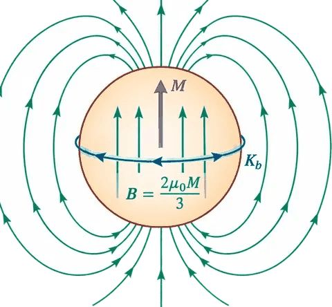
1.5 Problems
- Prob. 6.7 (infinite cylinder, M along the axis), 6.8 ($\mathbf M = ks^2\hat{\boldsymbol\phi}$), 6.9 (bar magnet), 6.10 (iron ring with a gap).
2. Physical meaning of bound currents (§6.2.2: background)
- Slab of uniform magnetization made of tiny loops. Internal currents cancel pairwise. At the edge, no neighbour cancels. The net effect is a single ribbon current $I$ around the boundary (Fig. 6.16).
- Each loop has area $a$ and thickness $t$. Dipole $m = Ma t$ (from M) and $m = Ia$ (from I). So $I = Mt$, and the surface current density is $K_b = I/t = M$.
- With the outward normal $\hat{\mathbf n}$: $\mathbf K_b = \mathbf M\times\hat{\mathbf n}$. There is no current on top or bottom when $\mathbf M \parallel \hat{\mathbf n}$.
- Each charge moves only within its own atom, yet the net effect is a real macroscopic current. "Bound" reminds us of that.
- Non-uniform M: the cancellation fails. For a $z$-directed M that varies with $y$: $(J_b)_x = \partial M_z/\partial y$. Including $y$-directed M: $(J_b)_x = \partial M_z/\partial y - \partial M_y/\partial z$. In general $\mathbf J_b = \nabla\times\mathbf M$.
- Check: $\nabla\cdot\mathbf J_b = \nabla\cdot(\nabla\times\mathbf M) = 0$, consistent with steady current.
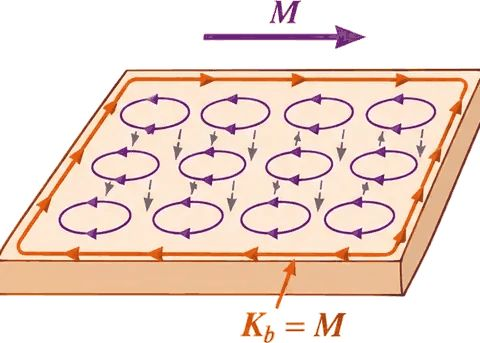
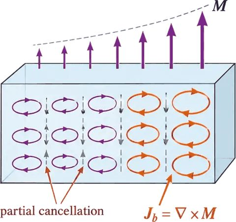
3. The magnetic field inside matter (§6.2.3: background)
- The true microscopic field fluctuates. "The field in matter" means the macroscopic average over many atoms, and M is smoothed the same way.
- The methods of §6.2.1 give the macroscopic field inside the material. Prob. 6.11 asks for the proof, using the method of §4.2.3.
4. What you should be able to do
- Derive Eq. 6.15 from Eq. 6.11 by integration by parts.
- Find $\mathbf J_b$ and $\mathbf K_b$ for a given M (Example 6.1).
- Explain why bound currents are real currents, even though no charge travels far.
- State the electric parallel and point out where it breaks (none here; compare §6.3.2).
5. Open points
- The orientation of $\mathbf K_b$ in Example 6.1 uses $\mathbf M\times\hat{\mathbf n}$ with the outward normal; check the sign against Ex. 5.9.
- Prob. 6.11 is listed, not solved.
Section 6.3 · The auxiliary field H
Book pp. 281–286. §6.3.1 is syllabus (Module I, item 5). §6.3.2 is background. §6.3.3 (boundary conditions for H) is beyond the syllabus list (decision D3 in the index).
Before you start
- Bound currents $\mathbf J_b = \nabla\times\mathbf M$ and $\mathbf K_b = \mathbf M\times\hat{\mathbf n}$ (§6.2).
- Ampère's law in vacuum, $\nabla\times\mathbf B = \mu_0\mathbf J$ (Ch. 5), and its integral form.
- The electric analogue: $\mathbf D$ and Gauss's law (§4.3).
1. Ampère's law with free and bound current (§6.3.1)
- Total current: $\mathbf J = \mathbf J_b + \mathbf J_f \quad(6.17)$. $\mathbf J_f$ is the free current (through wires or the material's conduction). $\mathbf J_b$ comes from magnetization.
- Ampère's law: $\dfrac{1}{\mu_0}\nabla\times\mathbf B = \mathbf J_f + \nabla\times\mathbf M$.
- Collect the curls: $\nabla\times\left(\dfrac{1}{\mu_0}\mathbf B - \mathbf M\right) = \mathbf J_f$.
1.1 Define H
$\mathbf H \equiv \dfrac{1}{\mu_0}\mathbf B - \mathbf M \quad(6.18)$.
$\nabla\times\mathbf H = \mathbf J_f \quad(6.19)$.
$\oint\mathbf H\cdot d\mathbf l = I_{f,\text{enc}} \quad(6.20)$.
- H plays for magnetism the role that D plays for electricity. Ampère's law in terms of free current only.
- Free current is what we control, so H is the convenient quantity. The book notes this is why experimenters speak of H more often than B.
- When symmetry permits, get H directly from (6.20). Probs. 6.7 and 6.8 become one-line problems this way.
1.2 Example 6.2: current in a copper rod
- Rod of radius $R$ with uniform free current $I$. Copper is weakly diamagnetic, so bound current runs against $I$ inside the rod and along $I$ on the surface.
- All currents are along the axis, so $\mathbf H$ is azimuthal. Ampèrian loop of radius $s \lt R$: $H(2\pi s) = I\,\dfrac{\pi s^2}{\pi R^2}$.
Inside ($s \le R$): $\mathbf H = \dfrac{I}{2\pi R^2}\,s\,\hat{\boldsymbol\phi} \quad(6.21)$.
Outside ($s \ge R$): $\mathbf H = \dfrac{I}{2\pi s}\hat{\boldsymbol\phi} \quad(6.22)$.
Outside, $\mathbf B = \mu_0\mathbf H = \dfrac{\mu_0 I}{2\pi s}\hat{\boldsymbol\phi}$, the same as an unmagnetized wire (Ex. 5.7).
- Inside, B cannot be found yet, because M is unknown. In copper M is so small that it is usually ignored.
2. Two warnings (§6.3.2: background)
- Eq. 6.19 looks like Ampère's law with $\mathbf J_f$ in place of $\mathbf J$. But a curl alone does not fix a vector field. You need the divergence as well.
- The divergence of B is zero. The divergence of H is not zero in general:
- So H has no simple Biot–Savart law and no vector potential.
- Bar magnet example: no free current anywhere. A naive use of (6.20) gives $\mathbf H = 0$, which is wrong. Because $\nabla\cdot\mathbf M \ne 0$ at the ends, $\mathbf H$ is not zero there.
- Advice from the book: first look for symmetry. With cylindrical, plane, solenoidal, or toroidal symmetry, use (6.20) directly. Without it, do not assume H is set by the free current alone.
3. Boundary conditions (§6.3.3: beyond syllabus)
- Normal component (from 6.23 across a pillbox):
- Tangential component (from 6.19 around a thin loop):
- For comparison, the B conditions: $B^\perp$ continuous (6.26); $\mathbf B^\parallel$ jumps by $\mu_0(\mathbf K\times\hat{\mathbf n})$ (6.27).
- Use (6.24)–(6.25) when M is known. Check against Ex. 6.2 and Prob. 6.14.
4. What you should be able to do
- Derive $\nabla\times\mathbf H = \mathbf J_f$ from Ampère's law and $\mathbf J_b = \nabla\times\mathbf M$.
- Find H for a symmetric free current (Example 6.2).
- State why H is not divergence-free and why that matters for bar magnets.
5. Problems in the excerpt
- Prob. 6.12: cylinder with $\mathbf M = ks\,\hat{\mathbf z}$; find B by two methods.
- Prob. 6.13: fields at the centre of spherical, needle, and wafer cavities (compare Prob. 4.16).
- Prob. 6.14: sketches of M, B, H for the bar magnet.
- Prob. 6.15: H as $-\nabla W$; Poisson equation with $-\nabla\cdot\mathbf M$ as source; uniform sphere by separation of variables.
6. Open points
- Prob. 6.15 is set up but not solved.
- The boundary conditions (6.24)–(6.25) are beyond the syllabus list. Treat them as background.
Section 6.4 · Linear and nonlinear media
Book pp. 286–294. §6.4.1 is syllabus (Module I, item 5: χm and μ). §6.4.2 (ferromagnetism) is syllabus (item 5). The Curie-point discussion is background.
Before you start
- $\mathbf H$ and its equations (§6.3). $\mathbf B = \mu_0(\mathbf H + \mathbf M)$ (from 6.18).
- Analogue: $\mathbf P = \epsilon_0\chi_e\mathbf E$ and $\epsilon_r$ (§4.4).
1. Susceptibility and permeability (§6.4.1)
1.1 Linear media
- Most materials: M is proportional to the field, if the field is not too strong.
- Writing $\mathbf M = \dfrac{1}{\mu_0}\chi_m\mathbf B$ is correct but inconvenient (6.28). Custom is to use H:
$\mathbf M = \chi_m\mathbf H \quad(6.29)$. $\chi_m$ is the magnetic susceptibility: dimensionless, positive for paramagnets, negative for diamagnets. Typical size $10^{-5}$ (Table 6.1).
- Then $\mathbf B = \mu_0(1+\chi_m)\mathbf H \quad(6.30)$, so $\mathbf B = \mu\mathbf H \quad(6.31)$ with $\mu \equiv \mu_0(1+\chi_m) \quad(6.32)$, the permeability.
- Relative permeability $\mu_r = 1 + \chi_m = \mu/\mu_0$ (footnote 12). Formulas for H in terms of B are constitutive relations.
- Vacuum: $\chi_m = 0$, so $\mu = \mu_0$.
Table 6.1 (book): magnetic susceptibilities.
| Diamagnetic | χ_m | Paramagnetic | χ_m |
|---|---|---|---|
| Bismuth | −1.7 × 10⁻⁴ | Oxygen (O₂) | 1.7 × 10⁻⁶ |
| Gold | −3.4 × 10⁻⁵ | Sodium | 8.5 × 10⁻⁶ |
| Silver | −2.4 × 10⁻⁵ | Aluminum | 2.2 × 10⁻⁵ |
| Copper | −9.7 × 10⁻⁶ | Tungsten | 7.0 × 10⁻⁵ |
| Water | −9.0 × 10⁻⁶ | Platinum | 2.7 × 10⁻⁴ |
| Carbon dioxide | −1.1 × 10⁻⁸ | Oxygen (liquid, −200 °C) | 3.9 × 10⁻³ |
| Hydrogen (H₂) | −2.1 × 10⁻⁹ | Gadolinium | 4.8 × 10⁻¹ |
1.2 Example 6.3: infinite solenoid with linear core
- Free current gives $\mathbf H = nI\hat{\mathbf z}$ by symmetry and (6.20).
- Then $\mathbf B = \mu_0(1+\chi_m)nI\hat{\mathbf z}$.
- Paramagnetic core: field enhanced. Diamagnetic core: field reduced. The bound surface current $\mathbf K_b = \chi_m nI\hat{\boldsymbol\phi}$ runs along I when $\chi_m > 0$, and against it when $\chi_m \lt 0$.
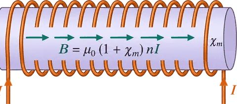
1.3 Divergence and bound current in linear media
- Unlike the field B, the divergence of M need not vanish at a boundary between two materials. Pillbox argument (Fig. 6.23): $\oint\mathbf M\cdot d\mathbf a \ne 0$, so $\nabla\cdot\mathbf M \ne 0$. Footnote 13: $\nabla\cdot\mathbf H = \mathbf B\cdot\nabla(1/\mu)$, not zero where $\mu$ changes.
- Bound volume current in a homogeneous linear material is proportional to the free current:
$\mathbf J_b = \nabla\times\mathbf M = \chi_m\mathbf J_f \quad(6.33)$. Unless free current flows through the material, all the bound current is on the surface.
2. Ferromagnetism (§6.4.2)
2.1 Not linear
- Ferromagnets keep their magnetization with no external field. Alignment is "frozen in". Susceptibility and permeability are not constants for them: they depend on H (footnote 14).
- Unlike paramagnets, neighbouring dipoles in a ferromagnet like to point the same way. This is a quantum effect, which the book does not explain. It aligns nearly 100 % of the spins in a region.
2.2 Domains
- Alignment happens in patches called domains, each with billions of dipoles. Domains are randomly oriented, so an ordinary piece of iron has no net magnetization.
- A strong field torques dipoles toward B. At domain walls, competing neighbours let the domain nearest to B grow at the other's expense. This moves the domain walls. If the field is strong enough, one domain takes over: saturation.
- The process is not fully reversible. A permanent magnet keeps a preponderance of aligned domains.
2.3 Hysteresis
- Magnetize a sample with a coil. Follow the sequence of points: a (zero), b (saturation), c (zero current, residual M), d (zero M, reverse current), e (reverse saturation), f (residual reversed), g (zero M), back to b.
- The closed path is the hysteresis loop. M depends on the history, not only on the current field. At three zero-current moments (a, c, f) M is different.
- Plots are usually B against H. For a long solenoid, $H = nI$. Because M is much larger than H in practice, $\mathbf B \approx \mu_0\mathbf M$.
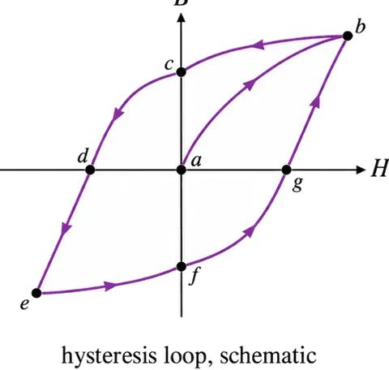
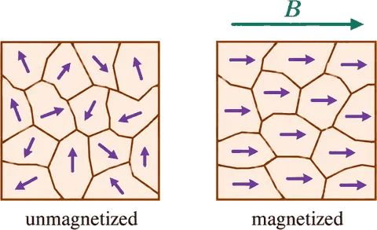
2.4 Curie point
- Thermal motion competes with alignment. Above the Curie point (770 °C for iron) the alignment is lost. Iron becomes paramagnetic.
- The change is abrupt: a phase transition, like boiling water.
3. Problems in the excerpt
- Prob. 6.16: coaxial cable with linear insulator; find B between the tubes and check the bound currents.
- Prob. 6.17: wire of linear material; B at radius s and total bound current.
- Prob. 6.18: sphere of linear material in uniform $\mathbf B_0$ (hint: Prob. 6.15 or 4.23).
- Prob. 6.19: estimate χ for copper from the naive model of §6.1.3; compare Table 6.1.
- Prob. 6.20: demagnetize the wrench at point c.
- Prob. 6.21: energy $U = -\mathbf m\cdot\mathbf B$ (6.34) and dipole–dipole energy (6.35).
- Prob. 6.22–6.23: force on a loop by Taylor expansion and by the curl identity; Eq. 6.3 derived.
- Prob. 6.24–6.25: floating magnets; charged dipoles on an axis.
- Prob. 6.26: electric–magnetic substitution table.
- Prob. 6.27–6.30: uniform-integral comparison; dielectric-like refraction $\tan\theta_2/\tan\theta_1 = \mu_2/\mu_1$ (6.28); dipole in a magnetic sphere; referee question on Ampère vs Gilbert dipoles.
4. What you should be able to do
- Use $\mathbf M = \chi_m\mathbf H$ and $\mathbf B = \mu\mathbf H$ correctly (6.29–6.32).
- Find B in a linear solenoid (Example 6.3).
- Explain domains, saturation, hysteresis, and the Curie point.
- Explain why a permanent magnet's state depends on its history.
5. Open points
- Table 6.1 values are quoted from the book; not checked.
- The Curie point 770 °C is the book's figure for iron.
- Footnote 13 (divergence of H) is stated, not derived here.